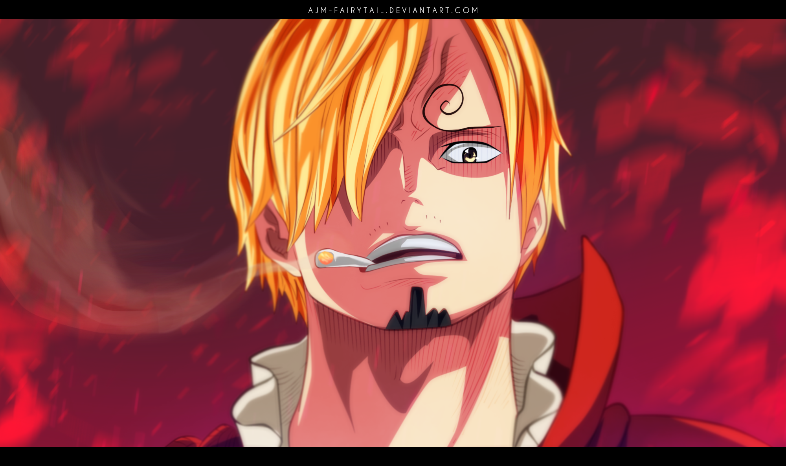
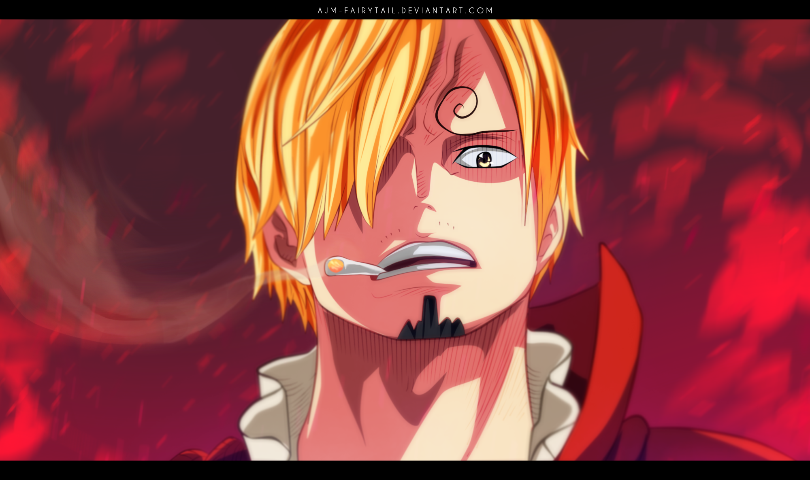

Monkey D. Luffy
Luffy é o protagonista da série, conhecido por seu chapéu de palha, que ele recebeu de Shanks, seu herói de infância. Ele tem o sonho de se tornar o Rei dos Piratas e encontrar o lendário tesouro, One Piece. Luffy é impulsivo, otimista e possui uma força de vontade inabalável. Ele comeu a Gomu Gomu no Mi, uma Akuma no Mi que transformou seu corpo em borracha, permitindo que ele se estique e resista a ataques físicos poderosos. Apesar de seu comportamento muitas vezes despreocupado, Luffy é um líder natural e valoriza profundamente seus amigos, a quem ele chama de nakama.
Roronoa Zoro
Zoro é o espadachim da tripulação e o primeiro a se juntar a Luffy. Seu objetivo é se tornar o melhor espadachim do mundo, superando seu rival Dracule Mihawk. Ele é conhecido por seu estilo de luta único, onde usa três espadas ao mesmo tempo, uma em cada mão e uma na boca. Zoro é sério e dedicado ao seu treino, mas também tem um péssimo senso de direção. Ele é leal a Luffy e frequentemente age como o segundo em comando da tripulação.
Nami
Nami é a navegadora da tripulação e uma excelente cartógrafa. Ela inicialmente se junta a Luffy com a intenção de traí-lo, mas acaba se tornando uma de suas mais leais companheiras. Nami tem um passado trágico, relacionado com a tirania dos piratas Arlong, que a levaram a odiar piratas antes de conhecer Luffy. Ela é muito inteligente e usa seu conhecimento do clima para manipular os elementos durante as batalhas, especialmente após obter o Clima-Tact, uma arma que controla o clima.
Usopp
Usopp é o atirador da tripulação e conhecido por suas histórias exageradas e mentiras, muitas vezes usadas para encorajar a si mesmo e a seus companheiros. Apesar de seu comportamento covarde, Usopp tem grande coragem e habilidades de atirador precisas. Ele é inventivo e cria vários gadgets e armas, como a sua arma principal, o estilingue chamado "Kabuto". Usopp também sonha em se tornar um "guerreiro dos mares" e é profundamente ligado à sua família, especialmente à sua mãe, Banchina.
Sanji
Sanji é o cozinheiro da tripulação e um habilidoso lutador que usa apenas suas pernas em combate para não danificar suas mãos, que são essenciais para cozinhar. Ele é galante e tem uma fraqueza por mulheres bonitas, muitas vezes se comportando de maneira exageradamente cavalheiresca na presença delas. Sanji foi criado no Baratie, um restaurante flutuante, e tem um passado misterioso relacionado com uma família poderosa. Seu sonho é encontrar o All Blue, um mar lendário onde se encontram todos os tipos de peixes do mundo.
Tony Tony Chopper
Chopper é o médico da tripulação e uma rena que comeu a Hito Hito no Mi, uma Akuma no Mi que lhe deu habilidades humanas. Ele pode se transformar em várias formas diferentes, que vão desde uma pequena rena até um gigante poderoso, graças ao Rumble Ball, uma droga que ele desenvolveu. Chopper é inocente e muitas vezes se comporta como uma criança, mas é extremamente dedicado ao bem-estar de seus amigos. Ele sonha em se tornar um grande médico capaz de curar qualquer doença.
Nico Robin
Robin é a arqueóloga da tripulação e a única sobrevivente da destruição de Ohara, sua terra natal. Ela comeu a Hana Hana no Mi, uma Akuma no Mi que permite que ela faça partes do corpo se multiplicarem em qualquer superfície. Robin é calma, inteligente e possui um vasto conhecimento sobre a história do mundo, especialmente sobre os Poneglyphs, antigos blocos de pedra que contêm segredos sobre o século perdido. Seu sonho é descobrir o verdadeiro significado da história do mundo.
Franky
Franky é o carpinteiro da tripulação e um cyborg autoproclamado. Originalmente chamado de Cutty Flam, ele se tornou um cyborg após um acidente que quase tirou sua vida. Franky é um engenheiro brilhante e foi responsável por construir o Thousand Sunny, o atual navio da tripulação. Ele tem uma personalidade extravagante e é conhecido por seu amor por colas e pela frase "SUPER!". Seu sonho é criar o navio perfeito que possa navegar por qualquer mar.
Brook
Brook é o músico da tripulação e um esqueleto vivo que comeu a Yomi Yomi no Mi, uma Akuma no Mi que lhe permitiu retornar à vida após a morte. Ele é um espadachim habilidoso e usa uma espada escondida em sua bengala para lutar. Brook tem um senso de humor peculiar, muitas vezes fazendo piadas sobre sua condição de esqueleto. Ele sonha em se reunir com o antigo amigo Laboon, uma baleia que ele prometeu rever um dia.
Jinbe
Jinbe é um homem-peixe e o timoneiro da tripulação. Ele é um ex-membro dos Piratas do Sol e possui grande habilidade em Karatê Homem-Peixe. Jinbe é calmo, honrado e valoriza a paz entre humanos e homens-peixe. Ele se juntou à tripulação de Luffy após a Guerra dos Melhores, onde demonstrou sua lealdade e coragem ao proteger Luffy em várias ocasiões. Seu sonho é ver uma coexistência pacífica entre todas as raças.